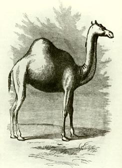
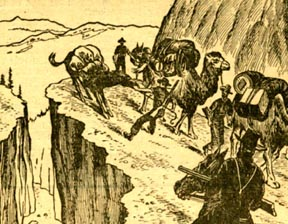
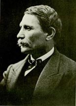
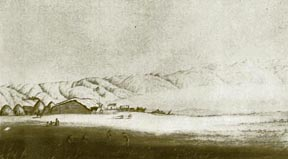
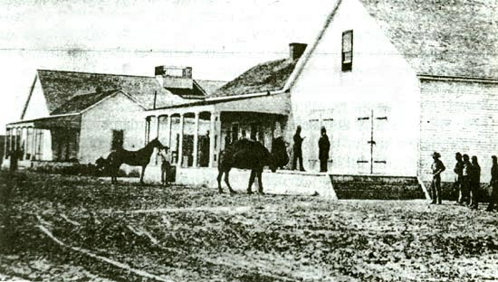

|
 |
 |
 |
|
| |
|
|  |
THE MYTHICAL
FORT TEJON "CAMEL CORPS" |
| George
Stammerjohn |
| |
At Fort Tejon, camels were NOT an essential element of
the Fort's history. Camels were at the Fort for only 5-1/2
months, from Nov. 17, 1859 to mid April 1860. The camels
were never used by the soldiers at Fort Tejon. They were
government property and were kept here only a short time
during the winter of 1859/60 before being moved to the
Los Angeles Quartermaster Depot on their way to Benicia
where they were auctioned off at a loss to the Government
in 1864. |
| |
Fort Tejon
was never any "Terminus" for
the camels. There was never a "U.S. Camel Corps" as
has been stated by so many authors; it was just an experiment.
E.F. Beale was a civilian under contract to survey a
road from New Mexico to California by the U.S. Government.
He was never in command of Fort Tejon, the camels or
any soldiers. |
|
| |
The camels have been one of the greatest myths and legends
of Fort Tejon's past. The story is great and many writers
have latched on to it. It is great stuff for western lore,
but most stories about this interesting experiment have little
grounding in fact. Unfortunately, many writers are perpetuating
these myths and rely on the early authors that wrote in the
1920s to 1960s who based their research and assertions on
non-historical methods. |
| |
 |
| |
|  |
| |
THE CAMEL EXPERIMENT IN CALIFORNIA |
| |
The victories and settlements
of the Mexican-American War increased the expanse of the
territorial United States. To control and protect this new
territory and the new citizens encompassed within its boundaries
or rapidly moving into the new territories, the government
deployed the vast majority of the U.S. Army. Quickly, Congress
and the War Department became appalled at the unexpected
new cost of simply supplying the outposts scattered over
the new region. The transportation cost of the Quartermaster
Department alone was more than the entire pre-war budget
for the whole of the United States Army. |
| |
Distances were great, and often
now through arid or semi-arid country. The Army posts, once
conveniently established along waterways and supplied cheaply
by contract steamboats, were now hundreds of miles from water.
This meant expensive civilian contracts with drayage companies
or even more expensive government owned wagon trains managed,
operated and maintained by large numbers of employed civilians,
paid at the prevailing wage - which out west was several
times higher than eastern wages. The expenses seemed never
to stop. Army wagon trains, using mules or oxen, needed regularly
spaced repair, water and feed depots. Water and feed points
were necessary at least a days journey apart and had to be
resupplied either by Army contract or supply trains. If local
farmers could not deliver forage, hay and grain, to given
points, then the Army had to buy it at one point and stock
the feeding points or it had to carry feed for the animals
which were pulling the freight Wagons. This often meant a
ratio of two forage wagons to every freight wagon. If a train
was outbound for a destination which could not supply livestock
feed for the return journey and grazing along the route was
minimal, then empty wagons (actually partially loaded wagons
for the animals pulling them had to be fed) would start back
for a depot point, to load up with forage to meet the homeward
bound wagon column. If timely contact was not effected, costly
government mules (or oxen) would die. And the feared auditors
in Washington, D.C. would want to know why. |
| |
Despite the motion
picture image of the western Army on the frontier, the
biggest problems were not "wild Indians" or "renegade
Mexican bandits". They were transportation, forage,
live drayage animals and a constant demand for economy. |
| |
Spurred
by a hope for improved and economical transport across
the more arid sections of the west, the U.S. Government
dusted off an old plan to experiment with camels as freight
animals. Some 75 Mediterranean camels were imported in
the mid-1850s and delivered to an Army quartermaster at
CampVerde, Texas. |
| |
Fanciful
legend has overshadowed the real story of the camel experiment.
There never was a "Camel Corps";
Edward F. Beale was never appointed to command a camel corps,
and Fort Tejon, California, was never the headquarters of
the non-existent "camel corps." There is myth and
reality about the Army's camels, and the truth is a more
interesting story than the fiction which surrounds the story.
Over developed romantic fiction has the Army using the camels
to haul freight, regularly to carry the mail, and for active
patrols against bandits and hostile Indians. In reality,
very little of this actually happened or was true. |
| |
|
| |
On trips
east across the Great American Desert, Gwin Harris Heap,
a proselytizing convert to the idea of camels as a cheap
transportation methodology for the American west, foisted
upon Edward F. Beale the recently published book by the
Abbe Huc, Travels in Tartary, Tibet and China, During the
Years 1844, 1845 and 1846. While Beale later claimed be
was immediately captivated by the journal, at the time
the opposite was true. It seemed to have made no impression
upon him. In fact, Beale may have considered Heap somewhat
a pushy zealot of a relative, for they later parted ways
under less than happy circumstances. |
| |
Gwin
Heap became the proponent of camel transportation and ultimately
the buyer of camels when the U.S. Navy was ordered to acquire
camels from Turkey and Egypt and bring them to Texas. Nowhere
in government correspondence of the time is to be found
any advocacy for the use of camels originating with Edward
F. Beale.In fact, when Beale won the contract for a re-survey
and road development along the 35th Parallel, Secretary
of War John B. Floyd ordered Beale to take 25 camels to
California (and return with them) as part of the expedition.
Beale exploded in anger and in ink to the Secretary. He
protested mightily and insisted that Floyd was wrong to
order him to use the camels. Secretary Floyd stood firm:
he wanted to see what these expensive forage burners, lounging
about Camp Verde outside of San Antonio could do. Reluctantly
Beale, who had no choice, traveled to Camp Verde, Texas,
and picked up the 25 camels. |
| |
The majority
of the foreign laborers hired by the U.S. Navy to work
with the camels were Greek urbanites from the streets of
Constantinople (modern day Istanbul) who had no experience
in the employment of camels. They had seen a free ride
to the United States, where it was rumored the streets
were paved with gold and it was a true land of flowing
milk and honey. The two Turks who were hired by the Navy,
and actually knew how to handle camels were soon disillusioned
by the flat Texas prairies. They wanted to go home. The
Navy contract specified that all foreigners associated
with the camels coming to Texas were to work six months
and then, if they wished, be discharged, given a bonus,
and transported home for free by the Navy. The two Turks
went home. This meant that the Greeks available to Beale
were absolute novices in handling the camels. |
| |
|
| |
 |
ffffffffff |
 |
|
Loading a Bactrian camel onboard ship in Turkey
Sketch by G. H. Heap, National Archives |
|
Edward F. Beale |
|
|
| |
"Ned" Beale
soon discovered this flaw, to his anger as his correspondence
to the Secretary of War points out The Greeks seemed untrainable
and totally incompetent, but in time several mastered their
new chore and went on to a long historic, association with
the camels which came west. The others departed the scene
upon arriving in California, leaving a confusing trail
for the historian to follow. Three of the men had names
similar to George (Georgics, Georgious and Georges) and
only one emerged out of the confusion as "Greek George":
Georges Caralambo. |
| |
Two of the other Greeks
also had similar names: Hadji Alli and Hadagoi Alli. While
Hadji Alli became historically known as "Hi Jolly", the other Alli disappeared after
leaving behind a total confusion caused by the numerous ways
his name could be spelled. All five floated through the story
of the camels until about December 1859, when government
records clarified only two were still in view: "Greek
George" and "Hi Jolly". |
| |
Despite his initial outrage, Beale did develop an appreciation
of the camels' ability, docility and temperament. He gained
trust in the animals' patience; camels would not stampede,
while mules scattered to the four winds. The camels did have
to be watched. While they would not run in fright, they would
amble about for miles to feed. By the time Beale's expedition
reached California, Beale was a believer in the camels' worth. |
| |
This did not mean, however, that Beale was totally honest
in his report to the government over the camels' usefulness.
He failed to report that be had lost three camels, the expense
of which would have been deducted from the contract's final
financial settlement. And he failed to report that the Mojave
Desert's rocky soil nearly crippled the animals' soft hooves.
They were bred for work in the softer, sand-gravel deserts
of the eastern Mediterranean. |
| |
Beale also ignored
orders to bring the camels back to New Mexico. Using the
lame excuse that the camels would be invaluable if the
troops in California were to become involved in the "Mormon
War", then seeming to be a reality on the Pacific Coast,
Beale left the camels with his business partner, Samuel A.
Bishop, and hurried home in early January 1858. |
| |
This homeward journey
created another myth, whereby in later years Beale adopted
a heroic leadership which does not match the historic correspondence
of the time. Once again Beale had outlived the other participants
and this allowed him to tell his version of the story without
eyewitness contradictions. So "the story" became "history". |
| |
As Beale remembered
it, he departed Los Angeles in early January 1858, with
a group of dragoons to protect "him" to
the Colorado River. When he reached the river, "he" stopped
a river steamer and ordered it to ferry him and his men across
the river. "He" had brought along ten camels to
carry forage for his mules and then "he" sent the
camels back to Fort Tejon in case of war in Utah. It is a
great heroic tale and you can find it in all the biographies
on Beale, but it only happened that way in Beale's imagination,
28 years later. |
| |
While
Beale was moving west in the early fall of 1857, the U.
S. government was moving troops westward against the Mormon
colony in Utah. In California, the Mojave and Salt Lake
Road connected Los Angeles, San Bernardino and Salt Lake
City. The majority of citizens in, southern California
harbored strong anti-Mormon attitudes. While pending "war
news" filtered into California along the Salt Lake
Road, a fantastic set of rumors emerged that the Mormons
departing California were smuggling tons of firearms toward
the Utah colony. The newspapers reflected these rumors
by playing them to the hilt, often with wild embellishments.
Added to the gunrunning rumors were others, particularly
that Mormon special agents were organizing the desert Indians
to attack "Gentile" parties crossing the Mojave
Desert into southern Utah (now southern Nevada). |
| |
While
the Army in San Francisco did not put much faith in these
rumors, it decided to launch an investigation. Major George
A. H. Blake, then senior 1st U. S. Dragoon officer in California,
was ordered to take a large patrol out along the Mojave
Road and to examine these rumors. His orders also included
closing the 1st Dragoon headquarters which had been at
Mission San Diego since August of 1857, and relocating
them at Fort Tejon at the end of the expedition. The Department
headquarters also informed Blake that on the way he should
meet Beale, who was returning east, at Cajon Pass and escort
him as far as the Colorado River. Blake received his orders
in mid-December of 1857 and immediately wrote an order
to 2nd Lieut. John T. Mercer, commanding Company F at Fort
Tejon, to join him at Cajon Pass. |
| |
Major
Blake's orders reached Los Angeles in the midst of a driving
rainstorm, a freak break in weather during the two year
old drought torturing southern California. First Lieut.
William T. Magruder, the commanding officer at Fort Tejon,
was doing Army business in Los Angeles when the correspondence
from San Diego arrived. Despite the miserable weather,
he attempted to return to Fort Tejon. It took him four
muddy days and a broken wagon to get across the San Fernando
Valley. Then, once in the mountains, he was caught in a
wind-whipped blizzard and nearly lost his way in a world
of blowing snow. On January 2, 1858 he finally managed
to reach Fort Tejon, buried in snow, where he informed
Lieut. Mercer of the task before him. |
| |
Meanwhile, Beale was in Los Angeles, organizing his return
trip. He had brought ten camels to the pueblo to haul forage
for his mules, leaving the other twelve at Bishop 's Ranch
- not at Fort Tejon. At Mission San Diego, Major Blake immediately
organized his part of the expedition and, despite the weather,
moved out with Dragoon headquarters staff, band and part
of the escort detachment of Company F troopers left behind
when the company had relocated to Fort Tejon in late August.
To guard company and regimental property at the old Mission,
Blake left a small detachment of many F troopers. He hurried
on his way, assuming that Mercer would also be on the move.
Blake was an impatient, headstrong martinet, who listened
only to his own opinion. He reached Cajon Pass on New Year's
Eve 1858, and gloweringly looked northward for Mercer's approaching
column. As Blake stood on the eastern flank of Cajon Pass,
Mercer had not even heard yet that he was ordered to join
Blake. |
| |
Lieut.
Mercer took his time obeying the orders from Blake.
The weather was impossible. It snowed and snowed and
the snow, driven by terrible winds, piled up ten foot
drifts along the route to Antelope Valley and Los Angeles.
Finally, four days into the new year, Mercer moved
his men out. He did not taDuring 1858, Bishop continued
to use the camels privately. He hauled freight to his
own ranch and to the developing town of Fort Tejon,
located three-fourths of a mile south of the Army post.
He did not haul Army freight, for Phineas Banning of
New San Pedro had won the quartermaster contract once
again. Banning held the contract until the Los Angeles
Depot was finished in mid-1859 and then the Army hauled
its own freight, often with Banning contracted to make
up the shortages in mules and wagons.ajon Pass. He
joined a very angry major Blake on January 10, 1858. |
| |
Edward F. Beale was also detained by the weather and by
the afternoon of January 10, had not reached Blake 's camp
at Cajon Pass. The next morning, Blake took up the march
over the Mojave Road for the Colorado River. Beale was at
least thirty hours behind Blake and never caught up. When
Blake reached the river he hailed an exploring river steamer
and requested it to wait. Beale finally arrived, ferried
his men and mules over the Colorado and sent the camels back
with Samuel Bishop to Bishop's ranch in the lower San Joaquin
Valley. Blake, moving fast, led the way back and took his
own command on to Fort Tejon. |
| |
During 1858, Bishop continued to use the camels privately.
He hauled freight to his own ranch and to the developing
town of Fort Tejon, located three-fourths of a mile south
of the Army post. He did not haul Army freight, for Phineas
Banning of New San Pedro had won the quartermaster contract
once again. Banning held the contract until the Los Angeles
Depot was finished in mid-1859 and then the Army hauled
its own freight, often with Banning contracted to make
up the shortages in mules and wagons. |
| |
The few immigrants to use the poorly developed 35th
Parallel wagon road were harassed by Mojave Indians at
the Colorado Crossing (Beale's Crossing). None of the
immigrants were able to cross and they turned back. To
protect the new route, the government ordered a fort
to be established near the northern crossing of the Colorado
River. |
| |
Major William Hoffman, 6th U.S. Infantry, led a reconnaissance
in January 1859. He was escorted by dragoons of Companies
K and B from Fort Tejon. There was trouble with Mojaves
at the river; the dragoons killed perhaps a dozen and
Hoffman recommended to San Francisco a full scale campaign
from Fort Yuma against the Mojave Indians. Hoffman requested
a depot be placed at Los Angeles to haul supplies for
his expedition across the desert; the War Department
approved and ordered Captain W. S. Hancock to Los Angeles.
Knowing it would take Hancock time to organize his wagon
trains, Major Hoffman requested that the Army take charge
of the camels and use them to haul supplies an the desert.
The Secretary of War refused Hoffman's request, stating
that the camel experiment was in the hands of civilians
in California and would remain so. Hoffman's expedition
went forth without the camels. |
| |
In the meantime, Beale had been ordered by the government
to improve the 35th Parallel wagon road and to do it
right this time. Immigrants had complained about the
road, saying it was not in reality what Beale's propaganda
said it was. For this second expedition, Beale was assigned
25 more camels, which worked well along the route. These
25 camels did not cross into California. At the same
time, Bishop was using the original camels to haul freight
for Beale's work crews, and his own. |
| |
Bishop had several large skirmishes with the Mojave,
who were willing to attack civilians but not the soldiers.
Possibly the skirmish with the dragoons had taught the
Mojave a mild lesson, or it could be they were surprised
by the numbers of soldiers along the river. The civilians
were fewer in number. Hoffman, having fought no Mojave,
concluded peace, established his fort (to become Fort
Mojave) and withdrew, leaving many warlike Mojaves still
out in the desert, eager to kill a white man. |
| |
East of the river, Bishop's men encountered a large
force of Mojaves who showed all signs of wanting an open
battle. Bishop mounted his civilian packers and laborers
onto the camels of this party and charged. They routed
the Mojaves. It was the only camel charge staged in the
west and the Army had nothing to do with it. Then Bishop
moved on eastward to find Beale. |
| |
On their march home to San Bernardino, Hoffman's troops
ran out of food and allegedly broke into one of Bishop's
buried desert food caches. Three thousand pounds of food
was stolen. Beale was outraged, demanded compensation
and opened a major breach between himself and the Army.
This breach widened and, beginning in the late summer
of 1859, the Quartermaster Department began to demand
that the camels under Bishop's control be turned over
to the Army at Fort Tejon. Finally, on November 17, 1859,
Bishop delivered all of the camels but four to 1st Lieutenant
Henry B. Davidson of the 1st Dragoons, regimental and
post at Fort Tejon. Davidson hired two civilians to herd
and care for the animals: Hi Jolly and Greek George.
Three of the four missing camels were found near San
Bernardino and finally, after Christmas of 1859, the
fourth was found at Whiskey Flats in the Kern River gold
country. |
| |
|
| |
On November 17, 1859, the Army at Fort Tejon took charge
of the camels from Bishop. The post quickly discovered
that most of the camels were in poor physical shape,
with sore backs, and that it was very expensive to feed
28 camels on hay and barley. In early March 1860, they
were moved to a rented grazing area 12 miles from the
post, under the care of the two herders, Hi Jolly and
Greek George. |
| |
One of the government projects for the western experiment
of the camels was to see if they would breed and procreate
in the far western territory. The camels, with males
and females intermixed, proved to the Army that they
could procreate, and produce young, strong, healthy camels.
The herd continued to grow, if slowly. There is a great
deal of nonsense written about the brutality of Army
camel herders to their charges. Camels were reputedly
shot dead, bludgeoned to death, or stabbed to death by
their herders or packers. The Army took a dim view of
herders or packers destroying government property. Camels
were expensive, and if a herder, camel packer, or soldier
had killed a camel, he would have paid for it by deductions
from his salary. An examination of the salaries of herders,
packers, and soldiers in government employment records
revealed no such incident. The death of each camel (those
few that died before 1864, when they were sold) is documented
in government quartermaster records in the National Archives.
However, Beale managed to lose a total of 13 camels and
also managed to escape from paying for the animals. In
1861, the Army at Fort Smith, Arkansas, was still trying
to get back 10 of the camels sent with Beale on the second
expedition. |
| |
There is also a great deal of undocumented story-telling
on how Army camels frightened and routed herds of government
horses, overturning wagons or dumping troopers on the
hard ground. Attempts to confirm these stories have not
proven fruitful. Rather, Army reports indicated how regularly
the animals blended together in the same corrals or fields,
and tolerated each other with natural ease. When the
camels were introduced to the government mule corrals
at the Fort Tejon Depot in November 1859, the quartermaster
reported no panic, no tumult; in fact, he was surprised
at how easily the animals adapted to one another. The
camels, showing effects from hard labor, primarily wanted
to eat, and they consumed expensive oats, barley and
hay at alarming rates. |
| |
|  |
Beale's Adobe House on the Tejon Indian Reservation
National Archives |
|
| |
Brevet Major James H. Carleton of Company K, 1st Dragoons,
refused to use the camels for his Mojave River expedition
in the spring of 1860. The camels, having only joined
the Army in November 1859 and moved to a grazing camp
in March 1860, had not yet recovered from the hard usage
of Samuel Bishop, who had worked them to haul supplies
to Beale's road expedition, his ranch, and to merchants
in the civilian town of Fort Tejon from New San Pedro
and Los Angeles. The camels remained at the grazing camp
12 miles east of the fort under the care of two civilian
herders, and a small detachment of soldiers to protect
the herders, until September 1860. |
| |
The first official
test for camels by the Army in California was conducted
by Captain Winfield S. Hancock, Assistant Quartermaster
in Los Angeles, in an attempt to cut the expense of
messenger service between Los Angeles and the recently
established Fort Mojave on the Colorado River. This
trial, in September 1860, featured the camel herder
Hadji Alli ("Hi Jolly"), riding a camel
like a Pony Express rider, carrying dispatches for Fort
Mojave. One camel dropped dead from exhaustion at the
Fishponds (modern-day Daggett), while a second attempt
to use an "express camel" killed it at Sugar
Loaf (modern-day Barstow). The Army discovered that while
camels died, and it was cheaper, the camels were no faster
than the two-mule buckboard in service under contract
to haul the mail to Fort Mojave. They also discovered
that these camels were not express animals; they were
not bred for speed, but to slowly carry heavy weights. |
| |
At the end of
September 1860, Hadji Alli and Georges Caralambo were
dropped from Army payrolls, and two former soldiers
were hired as "camel herders" at Fort
Tejon, at a higher salary. Hi jolly was fortunate that
he had been ordered by Captain Hancock to race a camel
to Fort Mojave. He was not held accountable for the two
dead camels and received his full month's pay of $30.00
for the last month of his employment. Greek George was
fired "for causes", which translated as stupidity,
being unable to read or write, and a too-frequent fondness
for American whiskey. |
| |
The second experiment,
during the early months of 1861, was again by a government-contracted
civilian party. They were to survey the California-Nevada
boundary, under the leadership of Sylvester Mowry,
a former Army officer and currently a citizen of west
New Mexico Territory. Mowry stayed in Los Angeles fighting
a bitter war with the California State-surveyor and
turned the field work over to J. R. N. Owen. Owen had
charge of four of the camels and hired "Hi Jolly" to
care for them. The expedition went forth to Fort Mojave
with only three camels. |
| |
The survey was a fiasco, poorly led, poorly organized,
and hopelessly confused. The group was often lost and
never fond the coordinates for the new Nevada-California
boundary line. Instead the expedition drifted into the
northern Mojave Desert and faced disaster in the barren
wilderness. Mules died, equipment was abandoned; it was
only the steady plodding of the camels which saved the
expedition from becoming a fatal exploration statistic.
When they finally struggled over the Sierras to the village
of Visalia it was obvious that the camels had saved the
day. |
| |
At the end of the survey, the three camels were returned
to Los Angeles. On June 17, 1861, the camels, 31 in number,
of which three were still at the Los Angeles Quartermaster
Depot, were transferred from Fort Tejon to Captain Hancock
at the Los Angeles Depot. There is no further documentable
association of camels with the later Civil war period
at Fort Tejon. |
| |
|  |
The only known photograph
of an Army camel. Government Depot near Banning's
Wharf. |
|
| |
William McCleave, a former First Sergeant of Company
K, 1st Dragoons, delivered the camel herd to Captain
Winfield S. Hancock on or about the 19th of June 1861.
The camels were placed in the government corrals at the
Los Angeles Quartermaster Depot, where once again they
easily mixed with the government mules. Macleave continued
as chief herder until early August, when Brevet Major
James H. Carleton lured the former sergeant away from
Los Angeles to accept a commission as a Captain in the
forming 1st Battalion of California Cavalry. Emil Fritz,
another former dragoon first sergeant, also traveled
to San Francisco with Carleton to accept a captaincy
in that same battalion. To command the battalion, Carleton,
who would become Colonel of the 1st California Infantry,
gathered in Captain Benjamin Davis of Company K, who
would receive the grade of Lieutenant Colonel of California
Cavalry. Carleton, who was expected to lead an expedition
along the California Trail, wanted his developing cavalry
force commanded by former dragoons. Much to Carleton's
disgust, the Governor appointed a number of men to be
officers in the battalion who did not have mounted experience. |
| |
When Carleton and comrades boarded a steamer for San
Francisco in early August 1861, they were joined by Captain
Hancock who had turned over the Los Angeles depot to
Second Lieutenant Samuel McKee of the Dragoon regiment.
Hancock, rumored to have received a staff promotion to
the rank of Major at the San Francisco Quartermaster
Department headquarters, took along his chief clerk,
leaving his office and paperwork in disarray. At San
Francisco, Hancock discovered he was authorized a leave
of absence with War Department permission to seek an
Ohio senior officer's commission. Hancock soon had his
general's star and a command moving from Ohio into western
Virginia. |
| |
When McCleave departed for San Francisco, Charles Smith
also gave up his position as assistant camel herder.
McKee then sought out Hadji Alli and Georges Caralambo
and hired them as camel herders for the depot. When McKee
departed for the east with his regiment, the camels were
left in limbo with Alli and Caralambo looking out for
them. They were moved to Camp Latham, in what today is
Culver City, in early December 1861. |
| |
The next two years were a period of frustration for
the Army on what to do with the camels, which continued
to eat while some of the females produced healthy young.
When the Los Angeles depot was transferred to Camp Latham
and then to Wilmington on the establishment of Drum Barracks
in February 1862, the camels went along. For a short
period they were the concern of George C. Alexander,
the former sutler or post trader at Fort Tejon, who was
the first senior clerk and financial accountant at Drum
Barracks. Alexander soon gave up the clerkship, and the
post quartermaster office. |
| |
First Lieut. David J. Williamson,
4th Infantry, California Volunteers, then became the
guardian of the camels. Hadji Alli ("Hi-Jolly") and Georges Caralambo ("Greek
George") continued to be in charge of direct supervision.
The question was: what to do with the growing and useless
herd? No one wanted, or had time, to bother with them.
Schemes were proposed by the Drum Barracks officers.
A mail express was proposed for the San Pedro to Fort
Yuma run; it was not tried. Then in late 1862 and again
in early 1863 there was a proposal, by Major Clarence
Bennett, to carry mail from San Pedro to Tucson, Arizona.
Nothing happened. An irregular mail express was attempted
from San Pedro to Camp Latham (Culver City) and from
Camp Latham on to Los Angeles. A few trips were made,
but then the service was dropped. Bennett then suggested
a mail run to newly re-opened Fort Mojave on the Colorado
River. The express was tried, but the camel foundered
and died 65 miles from Los Angeles and "Hi-Jolly" once
again carried the mail packet on his back across the
desert on foot to reach the fort on the far side of
the Colorado River.
Major Bennett then proposed sending the camels to Fort
Mojave but Lieut. Williamson, the former acting assistant
at Camp Latham and Drum Barracks, rigorously protested
the move. He could barely feed his own mules, which
were necessary for the operation of the desert fort.
He had no extra forage to feed a small herd of camels.
Furthermore, the camels were unsuited for the rocky
desert roads of the Mojave. The camels' hooves were
too tender; they became lame and were useless. Williamson
declared that Edward Beale had learned this years ago,
but had not reported the truth about his use of camels
on the California desert floor.
At this point Federal Surveyor-General Edward F. Beale
of California and Nevada, from his San Francisco office,
again appeared on the scene. He requested the use of
the camels in order to conduct land surveys of the
uninhabited portions of the new State of Nevada. Brigadier
General George Wright, then in command of the Department
of the Pacific, endorsed Beale's concept and Lieut.
Colonel Edwin B. Babbitt, the Department' s quartermaster,
pondered the suggestion and then agreed with Wright's
opinion. In reality, Babbitt felt the camels would
never be "used
profitably" and as early as November 1862, had
recommended that the experiment be cancelled and the
camels sold. However, Beale's request and the Army
decision to turn the camels over to another federal
agency were kicked upstairs to Washington, D.C. The
Quartermaster General in Washington endorsed Wright's
proposal and Wright was then about to take action when
two separate developments delayed his decision.
In mid-July 1863, Captain William G. Morris, Assistant
Quartermaster at Wilmington, penned a letter to Colonel
Babbitt. Beale, Morris stated, only wanted part of
the herd and the camels from his experiments had developed
a personality problem. The camels did not like being
used in small groups away from the herd. They became
sulky when separated, refused to eat or drink, and
on reaching a stream of water a camel would suddenly
lie down in it, throwing the rider and refusing to
move. On rocky or gravelly roads their feet became
tender, and very sore. They became cranky and refused
to take commands and often upon nearing a creek dumped
their riders into the water.
In the meantime, Beale was accused of misusing government
funds and of irregularities in conducting surveys.
It would appear that Beale was only surveying property
in which he, or his friends, had a financial interest.
The main charge was that Beale had spent a great deal
of his federal budget on redecorating his own office
in San Francisco. The amount of $64,000 spent on new
carpets and furnishings was bandied about in anti-Beale
circles. Beale was suddenly in disfavor and General
Wright withdrew his support.
In early September 1863, the General in Washington,
D.C. wrote to Colonel Babbitt that the Department of
the Pacific should sell the camels. Babbitt requested
opinions from his quartermasters. Lieutenant Williamson
wrote that the camels were of no use. Again, he stated
the failures of their use at Camp Latham and at San
Pedro. And he reminded Babbbitt that the experiments
by "Lieutenant
Beale and his partner Samuel Bishop" showed that
mules were superior. The roads when rough and rocky crippled
the animals. They were only good on sandy ground. Williamson
reminded Babbitt that the recent trial run of a camel
to Fort Mojave had foundered the animal just 65 miles
from Los Angeles, and the mail carrier had to walk on
to Fort Mojave. The express mail could be carried by "horses
or mules with regularity and with much less expense to
the government." Babbitt was convinced; the camels
would be sold at auction as soon as possible.
A decision was made to sell the camels at auction at
Benicia Arsenal. Obviously too many people in the Los
Angeles area knew their weaknesses and there was an
import market for camels in the San Francisco area
where, after several false starts, a merchant had been
bringing in Siberian camels since 1860.
Captain Morris was informed to prepare to send the
camels northward at the earliest moment, but at the
cheapest method. On November 19, 1863, Morris replied
to Babbitt that the camels, apparently 35 or 37 in
number, were "in
first rate condition for the trip to Benicia Depot." However,
he was delayed in forwarding them due to the heavy
winter storms along the coast route. After two years
of terrible drought, it was raining. Morris also considered
that the current storms would produce grass along the
coastal road, allowing the animals to be fed cheaply
enroute. The camels were started north in late December
1863. For a brief period Morris thought of shipping
them by sea, but the cost of feeding them was unreasonable
and so Morris decided the final answer was to drive
them overland.
The camels reached Santa Barbara on December 30, 1863
and the herders held them there while they celebrated
the coming of the New Year. Then they crossed the mountains
and moved on to the Salinas Valley and progressed to
Mission San Jose. They skirted the south end of the
bay and traveled up the east road of the shoreline
of the Contra Costa, arriving at the landing site for
Martinez on January 17, 18 64. The next day the camels
were ferried across the lower Carquinez Straits to
the government wharf at Benicia Arsenal and were then
moved to the corrals behind the stone constructed buildings
at the Benicia Quartermaster Depot. They were placed
in the open corrals; they were not stabled in any of
the fairly newly buildings at the depot.1
Auction notices were published and on February 26,
1864, the gavel came down on each camel as a separate
government item. The high bidder for almost all the
camels was Samuel McLeneghan, who reputedly had worked
with the government camels earlier. However, nowhere
in government employment hiring records was McLeneghan's
name found. The 37 camels brought only $1,945, much
to the grief of the Benicia Depot's quartermaster for
be had expected more active bidding and a higher sales
profit. Apparently McLeneghan was the only bidder,
and the auctioneer had trouble getting any response
from the meager crowd that showed up. McLeneghan got
the whole herd for $52.56 each.
The next day, the Benicia quartermaster wrote a report
to his senior in the Department of the Pacific headquarters
in San Francisco. He expressed his regrets that the
total amount of money was so low, explaining that few
of the people who attended were interested in putting
forth money for camels. He had hoped for more; the
auctioneer had tried mightily to encourage the group
of interested or curious spectators, but at least the
camels were sold. The experiment in California was
over. As consolation he offered a thought of relief: "They
have been but a source of expense for years past."
Author's Note: For years I have worked on the fascinating,
if disappointing, story of the camel experiment in
the West. I have plowed through clouds of myths and
good stories, and have been supported by the ongoing
humor of my colleagues in this business. My friends
have sent numerous new clues, or badly interpreted
or footnoted tales of the camels. But there is one
last tale. Humboldt Lagoons State Park has been one
of my history projects with the Department of Parks
and Recreation and the lagoons are located in Humboldt
County, far away from Fort Tejon, Drum Barracks and
Benicia Arsenal. Yet, the camels haunt me.
In mid-1865, two camels of government vintage were
sold by McLeneghan, or his associates, to the Portland,
Oregon, Zoo. They were placed aboard the ocean going
steamer, the Brother Jonathan, in the same compartment
where George Wright's big black riding horse was also
stabled, and the ship steamed out of San Francisco
for the Columbia River. Off Crescent City the Brother
Jonathan struck a submerged rock and went down, with
only a few of the human passengers surviving. All the
animals aboard were lost. Several weeks later, on the
long sandbar which blocks Stone Lagoon from the ocean,
the bodies of General Wright's horse and a "Fort Tejon camel" washed
ashore. The local ranchers were forced to bury the
stinking carcasses. One just cannot get away from the
Army camels.
The "Camel Barns" at Benicia Arsenal are
not camel barns. The elongated double tiered stone buildings
were "construction buildings" where the Quartermaster
Department manufactured equipment or altered civilian
items purchased on the open market prior to delivery
to the troops in the field. Later, the buildings were
used for storage as warehouses.
|
| |
Sources |
| |
| There are good and bad descriptions of the camel story.
Beginning with those who tried to be accurate: |
| |
• A Bibliography of the Camel, California Historical
Society Quarterly, December 1930.
• A. A. Gray, "Camels in California", California Historical Society
Quarterly, March 1930.
• Lewis B. Lesley (ed.), Uncle Sam's Camels, the Journal of May H. Stacey,
1929.
• Woodard, Arthur and P. Griffin, The Story of El Teion, 1942. A very incomplete
and undocumented work.
• Faulk, Odie B., The U.S. Camel Corps, 1976. A readable but sloppy work.
The section an the far west is filled with errors. |
| |
And the bad: |
| |
• Howard, Helen
A., "Unique History of Fort Tejon",
Journal of the West. A mythical account; almost nothing
is factual.
• Fowler, Harlan D., Camels in California, 1950. A cut
and paste rip-off of history published by Stanford University.
• Robertson, Deane and Peggy, Camels in the West, 1979.
Riddled with errors.
• California History Commission, Booklet, Drum Barracks
and the Camel Corps. Hilarious collection of errors,
mistakes, and folklore. |
| |
| |
| |
| |
| |
| |
| |
| |
| |
| |
| |
|
|
|
|
|
 |
|
 |
|
 |
|
 |
|
 |
|
 |
|
 |
|
 |
|
 |
|
 |
|
 |
|
 |
|
 |
|
 |
|
|
|
 |
|
 |
|
|